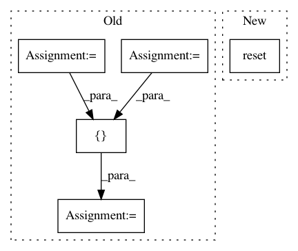

fe81b428bbedb56dd11fdf2e9e8d67bceaf0b137,envs/target/v_tgt_field.py,VTgtField,__init__,#VTgtField#Any#Any#Any#,33
Before Change
rng_get=self.rng_get, res_get=self.res_get)
// create first sink
del_p_sink_r = np.random.uniform(self.rng_p_sink_r_th[0,0], self.rng_p_sink_r_th[0,1])
del_p_sink_th = np.random.uniform(self.rng_p_sink_r_th[1,0], self.rng_p_sink_r_th[1,1])
del_p_sink_x = np.cos(del_p_sink_th)*del_p_sink_r
del_p_sink_y = np.sin(del_p_sink_th)*del_p_sink_r
self.path_th = del_p_sink_th
self.p_sink = self.pose_agent[0:2] + np.array([del_p_sink_x, del_p_sink_y])
self.create_vtgt_sink(self.v_amp_rng)
// -----------------------------------------------------------------------------------------------------------------
def create_vtgt_sink(self, v_amp_rng):
After Change
self.vtgt_obj = VTgtSink(self.rng_xy, res_map=self.res_map,
rng_get=self.rng_get, res_get=self.res_get)
self.reset()
// -----------------------------------------------------------------------------------------------------------------
def reset(self, seed=None):
if seed:
In pattern: SUPERPATTERN
Frequency: 3
Non-data size: 5
Instances
Project Name: stanfordnmbl/osim-rl
Commit Name: fe81b428bbedb56dd11fdf2e9e8d67bceaf0b137
Time: 2019-05-12
Author: ssm0445@gmail.com
File Name: envs/target/v_tgt_field.py
Class Name: VTgtField
Method Name: __init__
Project Name: catalyst-team/catalyst
Commit Name: b1d71998e8dad7604a3eb3ff0279fb275b8ae7e2
Time: 2019-11-03
Author: 34604336+jchen42703@users.noreply.github.com
File Name: catalyst/dl/tests/test_ppv_tpr_f1.py
Class Name:
Method Name: test_meter